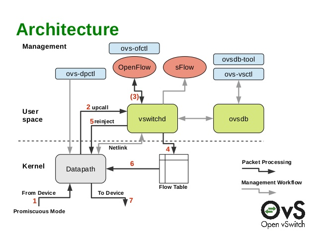
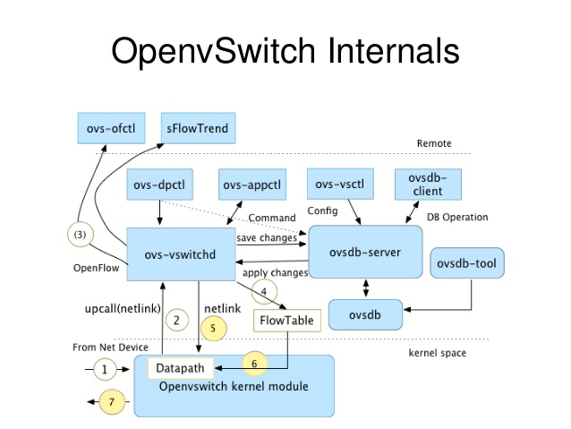

OVS原理
OVS架构

ovs的架构如上图所示，主要由内核datapath和用户空间的vswitchd、ovsdb组成。

主要模块职责
datapath是负责数据交换的内核模块，其从网口读取数据，并快速匹配Flowtable中的流表项，成功的直接转发，失败的上交vswitchd处理。它在初始化和port binding的时候注册钩子函数，把端口的报文处理接管到内核模块。vswitchd是一个守护进程，是ovs的管理和控制服务，通过unix socket将配置信息保存到ovsdb，并通过netlink和内核模块交互ovsdb则是ovs的数据库，保存了ovs配置信息
主要数据结构
 (图片来自csdn)
(图片来自csdn)
主要流程
注：部分转载自OVS 源码分析整理
添加网桥
- 键入命令
ovs-vsctl add-br testBR - 内核中的
openvswitch.ko收到一个添加网桥的命令时候——即收到OVS_DATAPATH_FAMILY通道的OVS_DP_CMD_NEW命令。该命令绑定的回调函数为ovs_dp_cmd_new ovs_dp_cmd_new函数除了初始化dp结构外，调用new_vport函数来生成新的vportnew_vport函数调用ovs_vport_add()来尝试生成一个新的vportovs_vport_add()函数会检查vport类型（通过vport_ops_list[]数组），并调用相关的 create()函数来生成vport结构- 当dp是网络设备时（
vport_netdev.c），最终由ovs_vport_add()函数调用的是netdev_create()【在vport_ops_list的ovs_netdev_ops中】 netdev_create()函数最关键的一步是注册了收到网包时的回调函数err=netdev_rx_handler_register(netdev_vport->dev,netdev_frame_hook,vport);- 操作是将
netdev_vport->dev收到网包时的相关数据由netdev_frame_hook()函数来处理，都是些辅助处理，依次调用各处理函数，在netdev_port_receive()【这里会进行数据包的拷贝，避免损坏】进入 ovs_vport_receive()回到vport.c，从ovs_dp_process_receive_packet()回到datapath.c，进行统一处理 - 流程：
netdev_frame_hook()->netdev_port_receive->ovs_vport_receive->ovs_dp_process_received_packet() net_port_receive()首先检测是否 skb 被共享，若是则得到packet的拷贝。net_port_receive()其调用ovs_vport_receive()，检查包的校验和，然后交付给我们的vport通用层来处理。
 (图片来自简书)
(图片来自简书)
流表匹配
flow_lookup()查找对应的流表项for循环调用rcu_dereference_ovs对流表结构体中的mask_list成员遍历，找到对应的的 成员flow=masked_flow_lookup()遍历进行下一级hmap查找，找到为止- 进入 包含函数
ovs_flow_mask_key(&masked_key,unmasked,mask)，将最开始提取的Key值和mask的key值进行“与”操作，结果存放在masked_key中，用来得到后面的Hash值 hash=flow_hash(&masked_key,key_start,key_end)key值的匹配字段只有部分ovs_vport_add()函数会检查vport类型（通过vport_ops_list[]数组），并调用相关的create()函数来生成vport结构- 可见，当
dp时网络设备时（vport_netdev.c），最终由ovs_vport_add()函数调用的是netdev_create()【在vport_ops_list的ovs_netdev_ops中】 netdev_vport->dev收到网包时的相关数据由netdev_frame_hook()函数来处理，都是些辅助处理，依次调用各处理函数，在netdev_port_receive()【这里会进行数据包的拷贝，避免损坏】进入ovs_vport_receive()回到vport.c，从ovs_dp_process_receive_packet()回到datapath.c，进行统一处理

收包处理
ovs_vport_receive_packets()调用ovs_flow_extract基于skb生成key值，并检查是否有错,然后调用ovs_dp_process_packet。交付给datapath处理ovs_flow_tbl_lookup_stats。基于前面生成的key值进行流表查找，返回匹配的流表项，结构为sw_flow。- 若不存在匹配，则调用
ovs_dp_upcall上传至userspace进行匹配。 (包括包和key都要上传) - 若存在匹配，则直接调用
ovs_execute_actions执行对应的action，比如添加vlan头，转发到某个port等。

upcall 消息处理
ovs_dp_upcall()首先调用err=queue_userspace_packet()将信息排队发到用户空间去dp_ifindex=get_dpifindex(dp)获取网卡设备索引号- 调整
VLAN的MAC地址头指针 - 网络链路属性，如果不需要填充则调用此函数
len=upcall_msg_size()，获得upcall发送消息的大小user_skb=genlmsg_new_unicast，创建一个新的netlink消息upcall=genlmsg_put()增加一个新的netlink消息到skberr=genlmsg_unicast(),发送消息到用户空间去处理